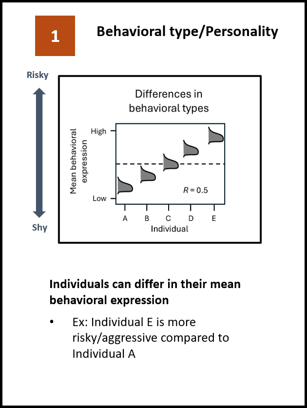
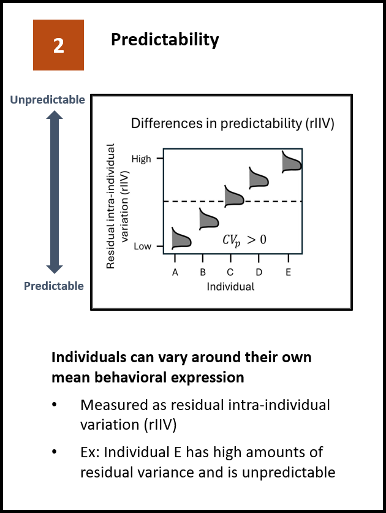
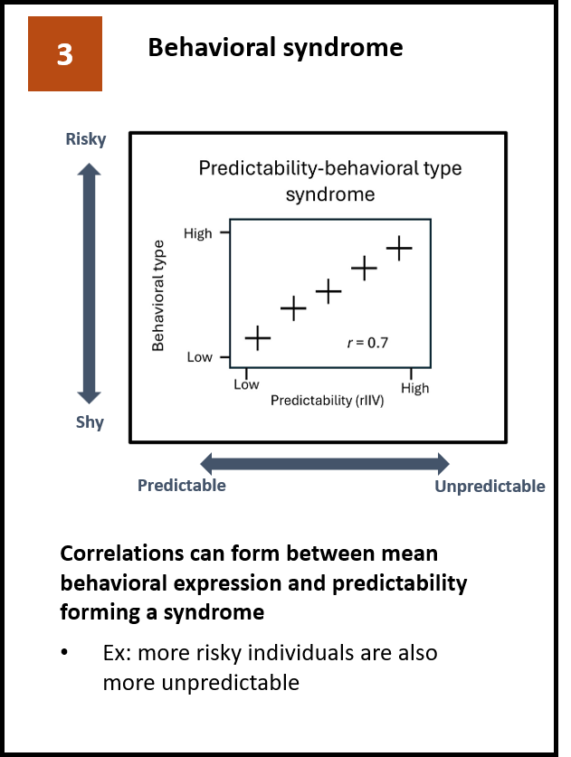
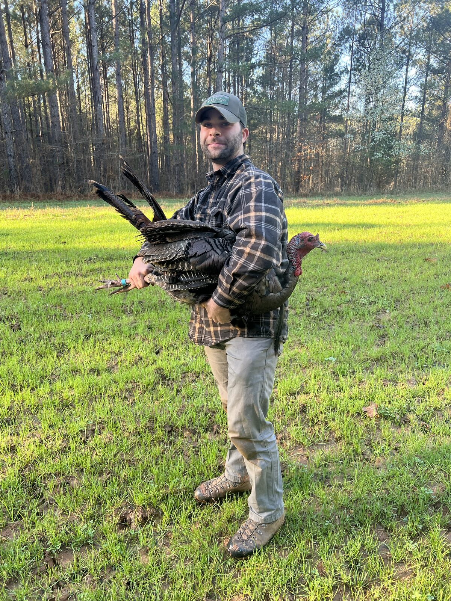
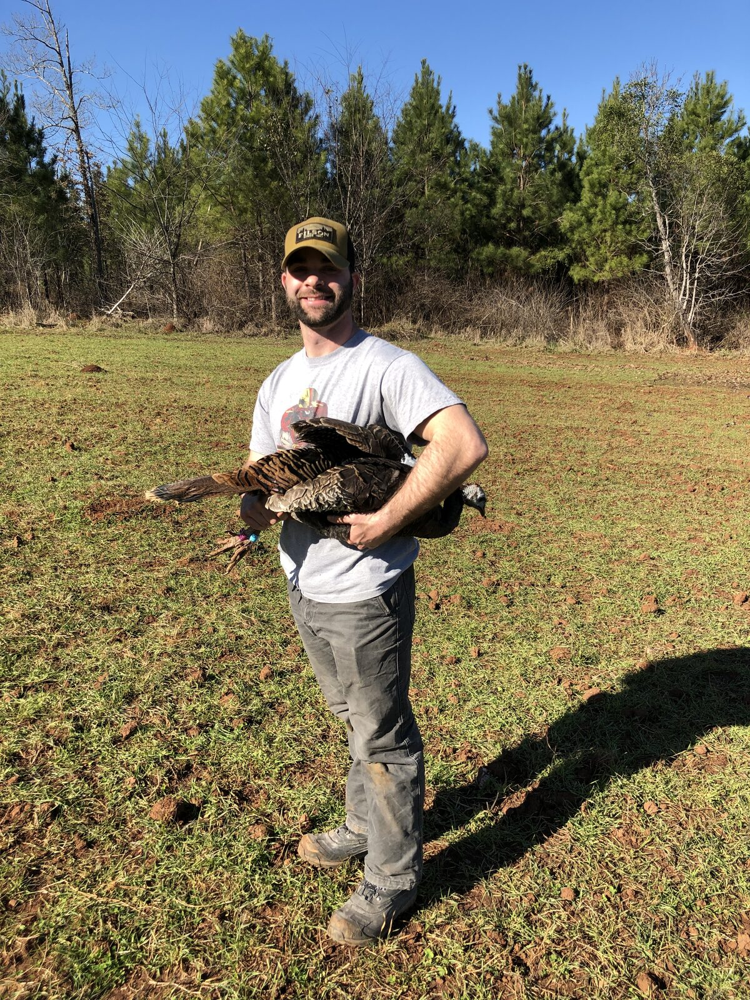
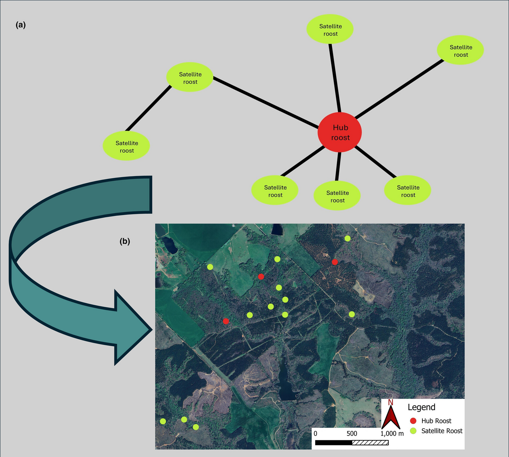
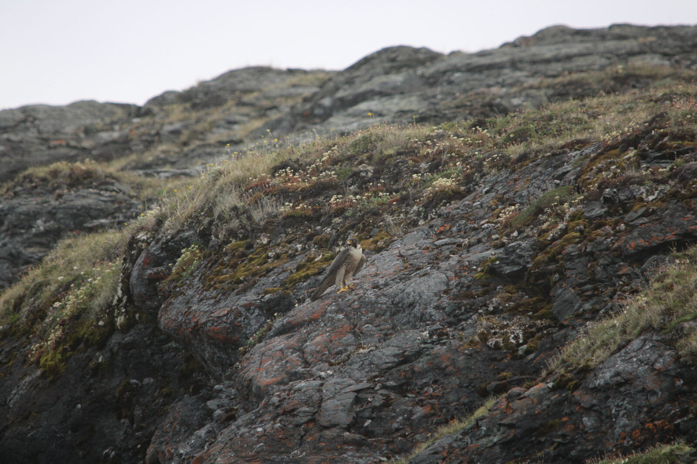
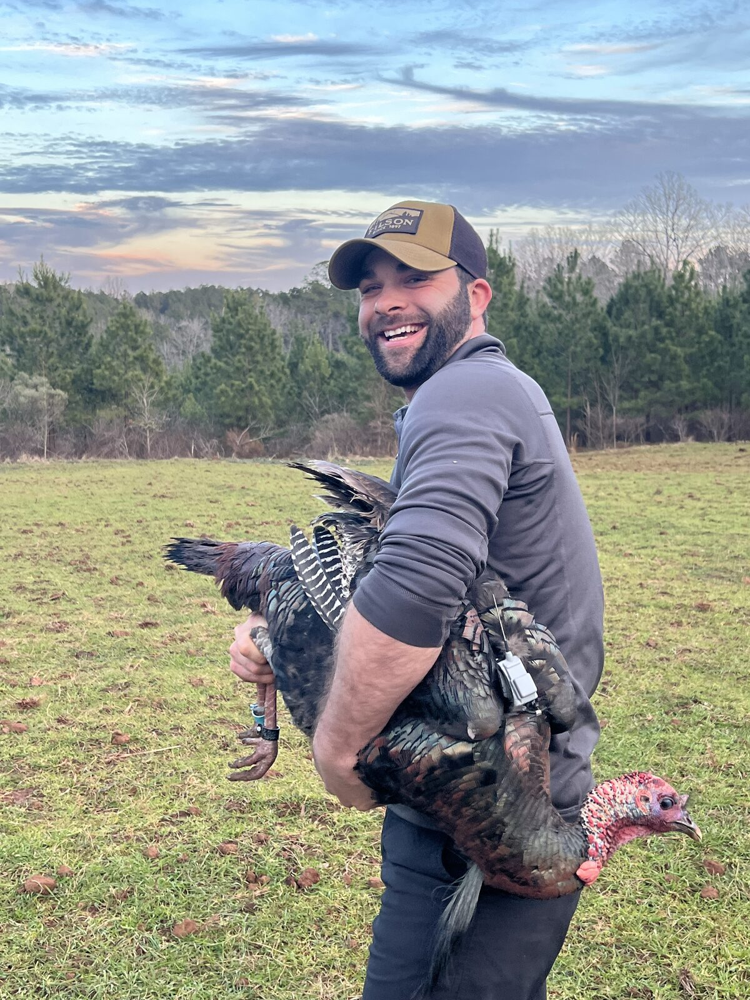
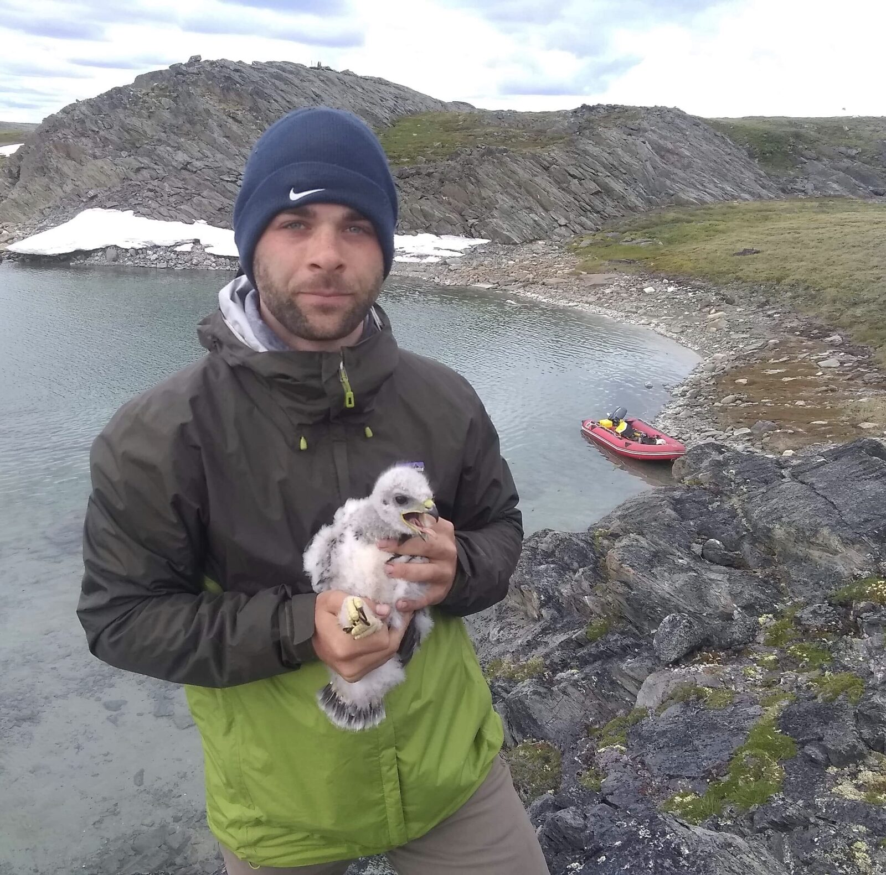
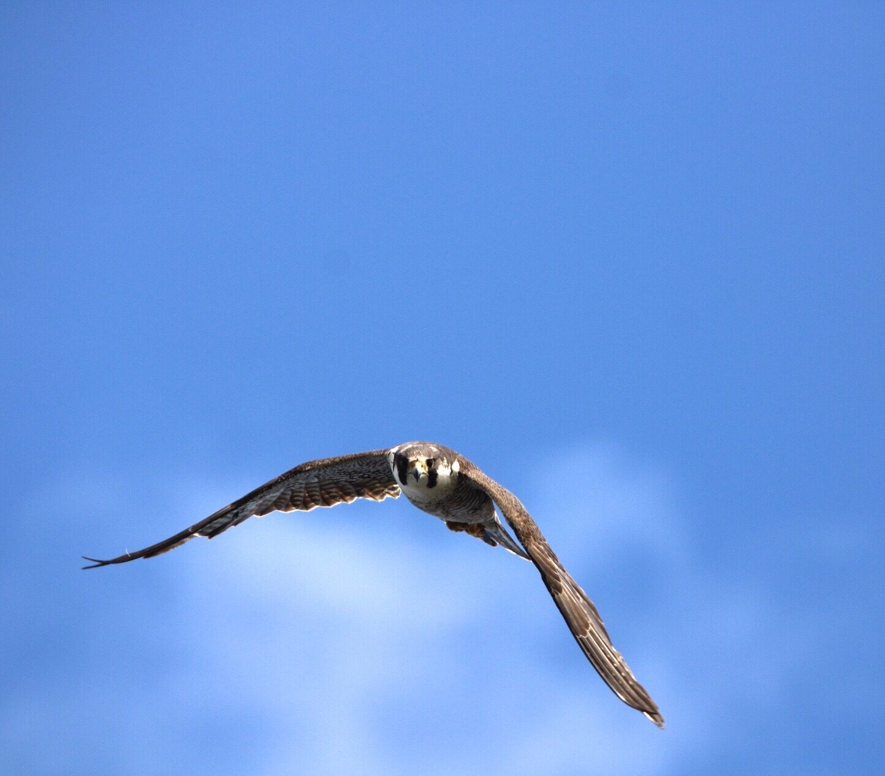

Why don't all animals behave the same way?
My research is broadly framed around understanding phenotypic variation in behavior — how individuals differ in their mean behavioral expression (behavioral type), how variable they are around that mean (behavioral predictability), and how they adjust behavior across environmental contexts (plasticity).



Current position
Postdoctoral Researcher
What I work on
Full research page →
Harvest-induced selection
Whether hunting selects for behavioral traits that increase detectability — using open areas, moving faster, or overlapping with the areas hunters use.

Human shield hypothesis
How humans reshape predator–prey dynamics, and whether proximity to human activity can raise, rather than lower, fitness for some species.

Site familiarity
Whether individual variation in site familiarity trades off against multiple sources of mortality, including harvest and predation.

Arctic falcon phenology
Whether resident and migratory top avian predators differ in how their breeding phenology responds to a warming Arctic.


